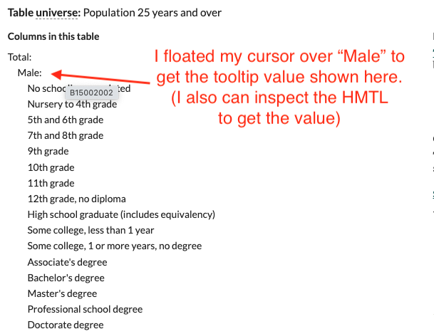

library(tidyverse)
library(tidycensus)
library(janitor)
# census_api_key("YOUR API KEY GOES HERE")15 tidycensus
This chapter shows an example of how to find data from the American Community Survey using Census Reporter and then to get that data using the tidycensus R package.
This is NOT a full explanation of tidycensus. See Kyle Walker’s site for that.
Additionally, in 2025 Kyle did a three-part series of videos about using Tidycensus: - Analysing American Community Survey data - Working with Decennial Census data - Mapping and Spatial Analysis
15.1 Other resources
- The Tidycensus package.
- The author of the package has a book.
- The NICAR24 lesson on tidycensus and the Github repo for it.
15.2 Prereqs
You need to install the tidycensus package and have a Census API key before using this. A key can be obtained here. Once you get the email with the key, it still might take a while to activate correctly … like maybe an hour?
It’s not a good idea to publish your API key since it is like a password, so I’ve commented that out in the code below. There is a way to store this value on your computer so you don’t have to reveal it in code, but I don’t want to get into that here.
15.3 Testing the API
Just to make sure all is working, lets gets the median household income for counties in Texas.
This doesn’t bring back all 256 counties because I’m specifying the “acs1” 1-year survey, so it only get’s counties big enough to have a good yearly value. I’ve commented out an argument I could use to get just Travis County to show how it is possible. Again, see the docs for more info.
mhi_trav <- get_acs(
geography = "county",
variables = "B19013_001",
state = "TX",
# county = "Travis",
survey = "acs1",
year = 2022,
)
mhi_trav15.4 Educational attainment
I’ll use some educational attainment data for some examples …
The goal here is to find the percentage of women with a degree level higher than high school. To do this we have to add together all the different degree types, then divide by all women.
We want to find this for multiple years in multiple geographies. i.e. to compare US rates vs various states or counties. I’m going to find only two years and get rates for the US and Texas specifically.
15.4.1 Find the table
We are using Census Reporter to find the variables we need, looking at Table B15002: Sex by Educational Attainment. (I’m not getting into how to use Census Reporter here, but it is an awesome tool for ACS facts.)
You can use a “tooltip” value from this site to to find a variable for Census Reporter. If you are familiar with a browser Inspector, you can look at the HTML and copy/paste values.

I used that method further down that page in the Female segment to collect the following variables. You have to insert an underscore between the table name and variable.
I put them in a vector like this so I can reuse the list many times. If I want to adjust it, I’ll do that here.
fem_edu_vars <- c(
"B15002_019", # All female
"B15002_028", # Female High school graduate (includes equivalency)
"B15002_031", # Female Associate's degree
"B15002_032", # Female Bachelor's degree
"B15002_033", # Female Master's degree
"B15002_034", # Female Professional school degree
"B15002_035" # Female Doctorate degree
)If you want different variables, find them and make your own list.
15.4.2 Get the data for Texas
Here I’m getting state numbers for these variables with geography = "state" but then filtering to get only Texas with state = "TX". I’m adding a column to indicate which year the data is from because I will need multiple years.
Once I have all the years I want I’ll bind them together.
college_tx_21 <- get_acs(
variables = fem_edu_vars,
geography = "state",
state = "TX",
survey = "acs1",
year = 2021
) |> add_column(yr = "2021")Getting data from the 2021 1-year ACSThe 1-year ACS provides data for geographies with populations of 65,000 and greater.college_tx_22 <- get_acs(
variables = fem_edu_vars,
geography = "state",
state = "TX",
survey = "acs1",
year = 2022
) |> add_column(yr = "2022")Getting data from the 2022 1-year ACS
The 1-year ACS provides data for geographies with populations of 65,000 and greater.# Once I have each year I'll bind them together
college_tx <- bind_rows(college_tx_21, college_tx_22)
college_txYour probably want more than two years of data.
15.4.3 Get the data for US
I’m doing the same thing here, but for US values.
college_us_21 <- get_acs(
variables = fem_edu_vars,
geography = "US",
survey = "acs1",
year = 2021
) |> add_column(yr = "2021")Getting data from the 2021 1-year ACSThe 1-year ACS provides data for geographies with populations of 65,000 and greater.college_us_22 <- get_acs(
variables = fem_edu_vars,
geography = "US",
survey = "acs1",
year = 2022
) |> add_column(yr = "2022")Getting data from the 2022 1-year ACS
The 1-year ACS provides data for geographies with populations of 65,000 and greater.college_us <- bind_rows(college_us_21, college_us_22)
college_usAgain you probably want more than two years of data.
15.5 Bind and clean
I’m putting the state and national data together so I can make nice variable names once instead of many times.
college <- bind_rows(college_tx, college_us)
college |> glimpse()Rows: 28
Columns: 6
$ GEOID <chr> "48", "48", "48", "48", "48", "48", "48", "48", "48", "48", "…
$ NAME <chr> "Texas", "Texas", "Texas", "Texas", "Texas", "Texas", "Texas"…
$ variable <chr> "B15002_019", "B15002_028", "B15002_031", "B15002_032", "B150…
$ estimate <dbl> 9763451, 2321205, 787873, 2141544, 906361, 153481, 110895, 99…
$ moe <dbl> 9478, 27228, 20962, 28440, 19354, 8400, 6797, 8666, 32864, 18…
$ yr <chr> "2021", "2021", "2021", "2021", "2021", "2021", "2021", "2022…15.5.1 Rename the variables
Here we add new column with friendlier variable names. They are still a little esoteric, but you can at least tell them apart.
college_vars <- college |>
mutate(
var_desc = case_match(
variable,
"B15002_019" ~ "fem", # All female
"B15002_028" ~ "fem_hs", # High school graduate (includes equivalency)
"B15002_031" ~ "fem_as_d", # Associate's degree
"B15002_032" ~ "fem_ba_d", # Bachelor's degree
"B15002_033" ~ "fem_ma_d", # Master's degree
"B15002_034" ~ "fem_ps_d", # Professional school degree
"B15002_035" ~ "fem_ph_d" # Doctorate degree
)
)
college_vars15.5.2 Check for moe problems
If the margin of error is more than 10% of an estimate, then that number is squishy and shouldn’t be relied upon to be the main point of a story. We are sticking with large geographies here to try to avoid those problems, but here I check to see if any values have a high margin of error.
moe_check <- college_vars |>
mutate(
moe_share = ((moe / estimate) * 100) |> round_half_up(1), # calc moe share
moe_flag = if_else(moe_share >= 10, TRUE, FALSE) # make a flag if high
)
moe_checkmoe_check |> filter(moe_flag == T)If the moe_flag was TRUE anywhere then we might not want to use that number. Here all our margins of error are less than 10% so I’m going to drop the moe column in the next section.
15.5.3 Select columns of interest
Here I’m rearranging the columns and dropping the old variable and moe columns.
college_clean <- college_vars |>
select(
geoid = GEOID,
name = NAME,
yr,
var_desc,
estimate
)
college_clean15.6 I would export here
I would export the cleaned data college_clean here but I want to stay in the same notebook.
15.7 Calculate percentage degrees
To get the share of people with degrees vs all people, we have to do some math. It is easier in this case to pivot the data to calculate those percentages.
15.7.1 Pivot the data
First we have to pivot this to do some math. I remove the moe field to avoid complication.
college_wide <- college_clean |>
pivot_wider(names_from = var_desc, values_from = estimate)
college_wide15.7.2 Make the math and percentages
- Percent with high school degree is that number (fm_hs) divided by all female (fem).
- To get percent with post high school degree we have to add together all those with the different types of degrees first, then divide by all fem to get the percentage.
college_calcs <- college_wide |>
mutate(
prc_hs = ((fem_hs / fem) * 100) |> round_half_up(1),
sum_deg = fem_as_d + fem_ba_d + fem_ma_d + fem_ps_d + fem_ph_d,
prc_deg = ((sum_deg / fem) * 100) |> round_half_up(1)
)
college_calcs15.8 Select your percentages
Now that you have the percentages, you might want to focus on those to view or chart.
prc_cols <- college_calcs |>
select(name, yr, prc_hs, prc_deg)
prc_cols15.9 Different shapes
This might not be necessary, but you might want to rearrange the data to see of chart.
15.9.1 Make longer
What you want to move it to might depend on your needs, but making long sometimes helps with ggplot charting.
prc_long <- prc_cols |> pivot_longer(
cols = prc_hs:prc_deg,
names_to = "prc_type",
values_to = "prc_value"
)
prc_long15.9.2 Make wider
Maybe you want to see how each value has changed by having a column for each year.
prc_type_yr <- prc_long |>
pivot_wider(names_from = yr, values_from = prc_value)
prc_type_yr